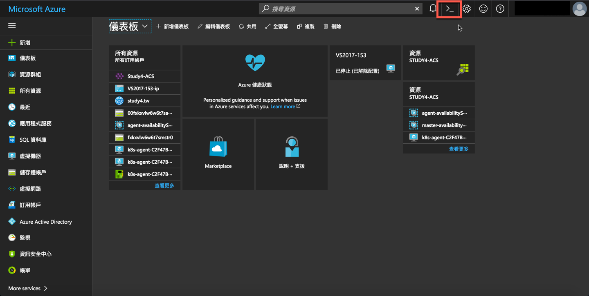
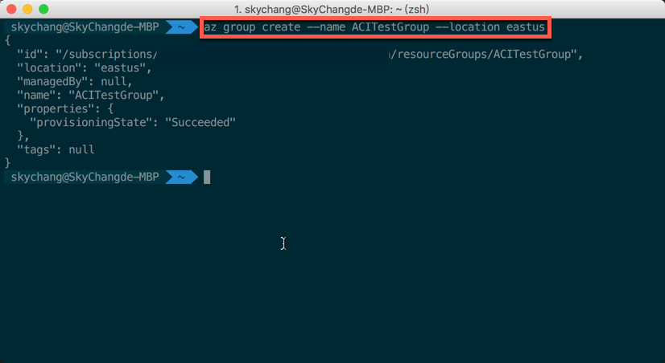
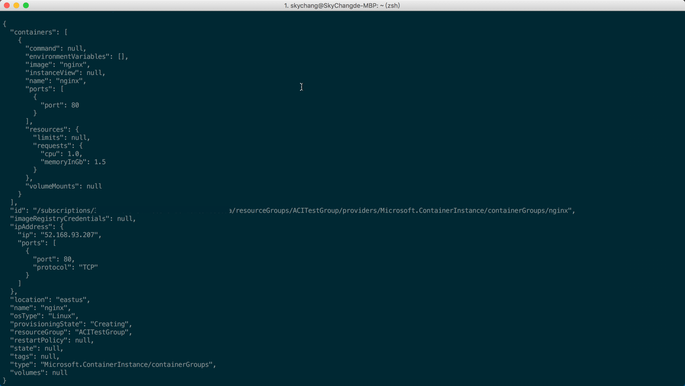
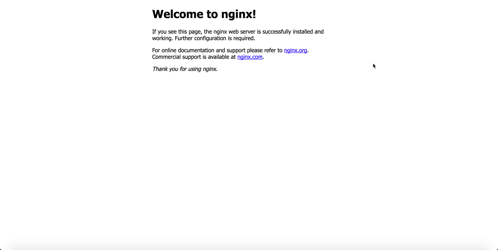
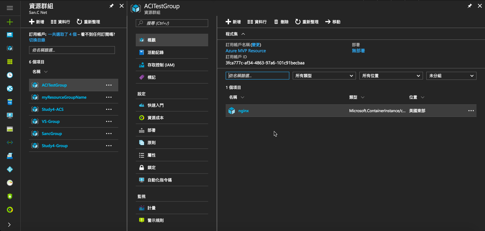
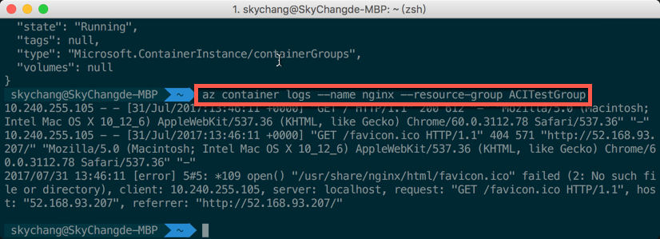
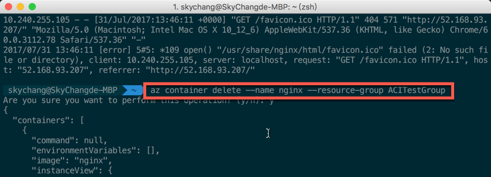

前言
這段時間，連續的探討 ACS 的 Kubernetes，但其實這幾天，在 Azure 上的容器服務，又出現了一個更方便，更強大的容器服務，也就是今天的主題，Azure Container Instances ( ACI )。
關於 Azure Container Instances
大家回想一下，目前雲端上的服務，如果要使用容器，我們必須怎要做？以 Azure 來說，大概上有這幾種方法 ( 可能沒有全部列出 )，最經典的，就是建立一台 Windows Server 的 VM，或是 Linux VM 來支援容器，一個是簡單，便捷的 App Service，目前可以提供 Linux 上傳上去：其次就是我們最近連發的 ACS 主題，透過 Azure Container Service 來建立 Kubernetes 等，來支援 Container：但是如大家所知，無論是 VM，或是 ACS ，其實底層也是必須要搭配 VM 來搭建，而建立的過程中，可能也需要一點時間：但有的時候，我們會希望能和建立 VM 一樣的方便，甚至比 VM 建立的還要迅速。
沒錯，這就是 Azure Container Instances 的由來，也是小弟一直很期待的一個服務。
那 Azure Container Instances ( ACI ) 有什麼好處呢？根據官網的描述有幾項特點。
- 超。快速啟動
- 虛擬機層級的安全性
- 想要多大多小，自型定義
- 提供對外的 IP
- 超方便的儲存體支援
- 支援 Linux / Windows 容器
- 輕鬆的群組與互相協調
容器提供了虛擬機顯著啟動的好處。隨著Azure的容器實例，您可以在幾秒鐘內開始建置 Windows / Linux 容器，而無需部署和管理虛擬機；而也因為是虛擬層級的容器服務，所以可以說，每一台硬體就是提供給你 run 容器，所以，你可以輕易地調整你 run 這個容器的 cpu 大小和記憶體：當然，透過 Azure 整體的網路服務，在未來更可以輕易地整合 Azure 網路服務：既然有網路，那當然也會有儲存體，所以可以透過 Azure File 直接的共享：最後，不光是一個容器，你也可以輕易地建立 Group，甚至和 Kubernetes 串連。
沒錯， ACI 的未來就是如此看好 :)
接下來，就依據官網的教學實際走一次吧
使用 Shell 建立
這邊，我們可以使用 Azure Cloud Shell 建立 ( 如下圖 )，或是 Azure Cli 來建立，小弟這邊就使用 Azure Cli 來建立吧，但 Azure Cli 版本請大於 2.0.12 ，版本更新

版本須大於 2.0.12，可用底下指令查看版本
1 | az --version |

建立資源群組
基本上，東西都是要放到資源群組裡面，所以我們就先建立一個稱為 ACITestGroup 且在東美的資源群組。
（ 目前東亞不支援，此服務還在 Previrw )
1 | az group create --name ACITestGroup --location eastus |
完成如下

建立容器
接下來，我們就可以用指令快速建立一個 nginx 的容器，並且放到 ACITestGroup 的資源群組，且要公開 ip。
1 | az container create --name nginx --image nginx --resource-group ACITestGroup --ip-address public |
完成後，我們就可以從下圖看到建立完成的相關資訊。

因為是對外 ip ，所以我們可以直接使用此 ip 瀏覽。

如果，想查看所有的 container ，也可以用底下的指令。
1 | az container list |
或是針對其中一個 Container 查看。
1 | az container show --name nginx --resource-group ACITestGroup |
當然，也可以從 Portal 的資源群組查看，只是目前 Portal 裡面是看不到 Public IP 的。( 等未來吧 )

查看容器 Log
如要查看 Log ，可以用底下指令
1 | az container logs --name nginx --resource-group ACITestGroup |
結果如下圖。

刪除容器
最後，如果要刪除，我們可以下底下指令。
1 | az container delete --name nginx --resource-group ACITestGroup |
結果如下圖。

後記
這篇是照著官網，很簡單的一個初體驗，但從這次的體驗已經可以感受到，Azure 對於 Container 的發展，其實整整邁進了一大步，相信未來一定會有更多更好玩的服務出現！！